Dermatose papulosa nigra (DPN) é uma condição benigna cutânea mais comum na população negra (10 a 35%), particularmente nas mulheres. É uma variante da queratose seborreica, representada por pápulas hiperpigmentadas de 1 a 5 mm, pouco elevadas, assintomáticas e localizadas na face, pescoço e tronco. Histologicamente, assemelha-se à queratose seborreica. Exibem hiperceratose, acantose irregular, cistos córneos e marcada hiperpigmentação da camada basal. Está associada a mutações no gene FGFR3 semelhantes às da ceratose seborreica. Na dermatoscopia, a DPN mostra aberturas, fissuras e cristas semelhantes a comedão, mostrando um padrão cerebriforme.
A condição pode ser esteticamente indesejável para alguns pacientes. A DPN geralmente começa na adolescência e é rara em pessoas com menos de 7 anos. A incidência de dermatose papulosa nigra, bem como o número e o tamanho das lesões individuais, aumenta com a idade.
Provavelmene a DPN é determinada geneticamente, com 40-54% dos pacientes com história familiar de envolvimento. Acredita-se ser causada por um defeito nevoide no desenvolvimento do folículo pilossebáceo. Hairston et al sugeriram que a dermatose papulosa nigra deva ser classificada dentro do grupo dos nevos epiteliais.
Nenhum tratamento é geralmente indicado para dermatose papulosa nigra, a menos que as lesões sejam cosmeticamente indesejáveis. Terapêuticas agressivas têm sido complicadas por hiperpigmentação pós-operatória, hipopigmentação ou cicatrizes. Formação de queloide é uma complicação potencial. Curetagem abrasiva com ou sem anestesia, crioterapia superficial com nitrogênio líquido para pacientes de pele clara, eletrodissecção seguida de curetagem pode ser eficaz. Tomar cuidado com todas as terapias, minimizando a profundidade do tratamento. Podemos usar dispositivos de laser, incluindo laser de titanilfosfato de potássio de 532 nm, laser de diodo de 532 nm, laser de corante pulsado de 585 nm, laser de granada de ítrio e alumínio dopado com neodímio de 1.064 nm, laser fracionado dopado com érbio de 1.550 nm e dióxido de carbono de 10.600 nm foram relatados com sucesso.
REFERÊNCIAS BIBLIOGRÁFICAS
1. Dermatosis papulosa nigra: a clinically and histopathologically distinct entity. Metin SA, Lee BW, Lambert WC, Parish LC. Clin Dermatol. 2017 Sep-Oct;35(5):491-496.
2. Early-onset dermatosis papulosa nigra. Veraitch O, Rickaby W, Robson A, Higgins E, Mellerio JE. Br J Dermatol. 2016 May;174(5):1148-50.
3. A Systematic Review on the Treatment of Dermatosis Papulosa Nigra. Maghfour J, Ogunleye T. J Drugs Dermatol. 2021 Apr 1;20(4):467-472.
4. Elective Treatment of Dermatosis Papulosa Nigra: A Review of Treatment Modalities. Tran M, Richer V. Skin Therapy Lett. 2020 Sep;25(4):1-5.
5. Superimposed segmental dermatosis papulosa nigra. Grimalt R, Happle R. Clin Exp Dermatol. 2020 Jun;45(4):521-523.
Atlas de imagens 20

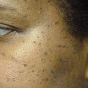


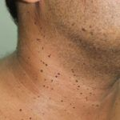

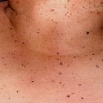


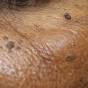

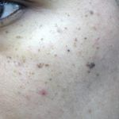

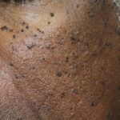

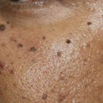


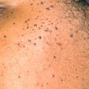

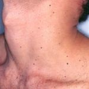

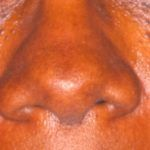

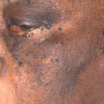

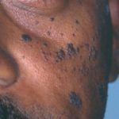

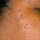

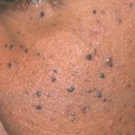

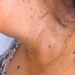

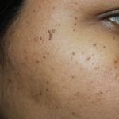
Na Skin Prime
Como podemos ajudar
Entre os recursos citados para Dermatose Papulosa Nigra (DPN), estes estão disponíveis na clínica:
Tratamentos
Diagnóstico